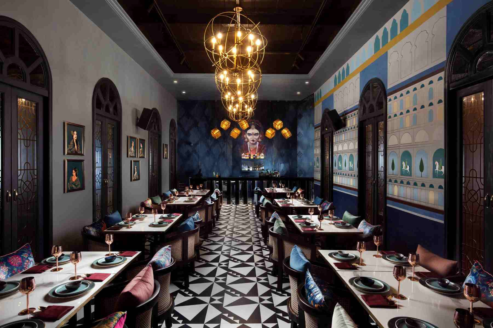
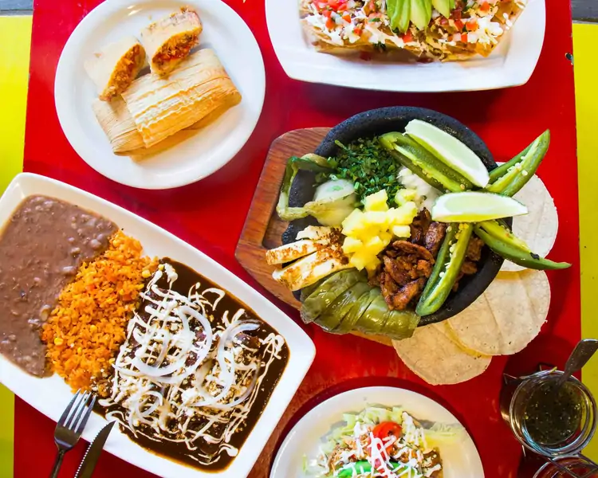
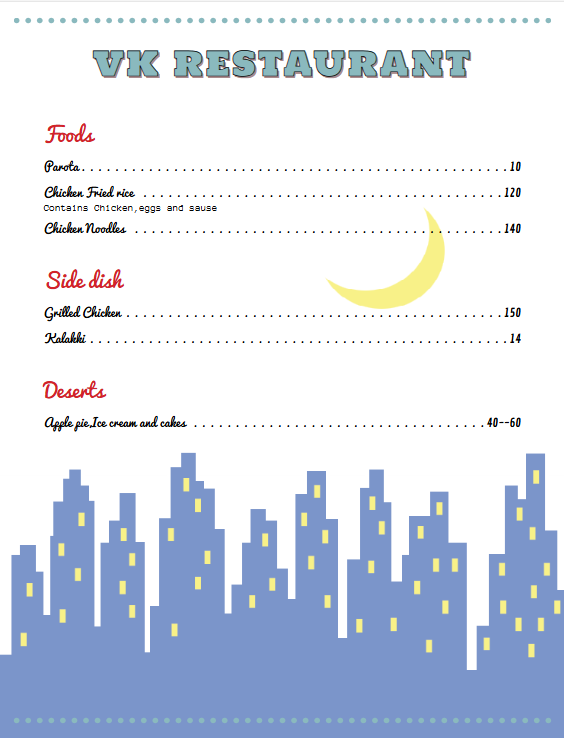
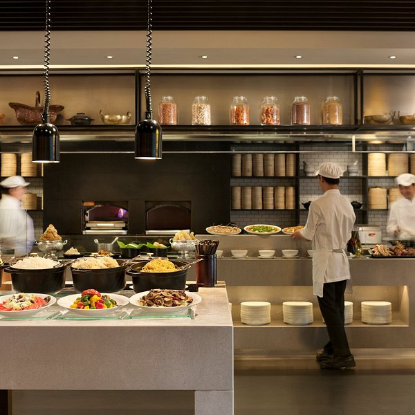

Dining is not just about eating, it’s about experiencing
At VK RESTAURANT, we serve more than just food — we serve experiences. With a passion for fresh ingredients, bold flavors, and warm hospitality, our kitchen brings people together over unforgettable meals.

VK Restaurant has been designed to create a perfect balance of elegance, comfort, and warmth, welcoming every guest with a memorable experience. The exterior showcases a modern yet inviting façade, highlighted with a stylish color palette, soft ambient lighting, and clean architectural lines that make the restaurant stand out both day and night. Large glass windows offer a glimpse of the vibrant atmosphere inside, while carefully designed signage adds a touch of sophistication.Stepping inside, the interior blends contemporary design with cozy aesthetics. Warm tones, artistic wall accents, and carefully chosen décor elements create a relaxed dining environment. Comfortable seating arrangements ensure both privacy and social interaction, while soft lighting enhances the overall mood. The combination of elegant furniture, neat layouts, and thoughtful detailing reflects VK Restaurant’s commitment to quality. Every corner, from the entrance to the dining area, has been crafted to make guests feel at home while enjoying a refined dining experience.

Fresh Ingredients Only – We use handpicked vegetables, high-quality grains, and the freshest meat to ensure every dish is healthy and delicious.
Consistency in Quality – Every plate served at VK Restaurant maintains the same standard of taste and quality.
Signature Recipes – Unique dishes exclusive to VK Restaurant give you flavors you won’t find anywhere else.
No Compromise Cooking – We believe in quality over shortcuts; every dish is freshly cooked to order.
Perfect Balance of Spices – Our chefs ensure the right mix of spices for a flavorful yet smooth dining experience.
Our Restaurant Menu

At VK Restaurant, we offer a truly unique dining experience with our underwater view seating area. Guests can enjoy their meals while surrounded by the serene beauty of an aquatic environment. The crystal-clear glass walls give a breathtaking view of colorful fish and underwater scenery, creating a calm and mesmerizing atmosphere. This special space blends fine dining with nature’s wonders, making every visit unforgettable. Whether it’s a romantic dinner, a family outing, or a special celebration, our underwater view place brings together taste, comfort, and beauty in the most extraordinary way.

For table reservation click the below link for registration for registration fee will be there so you can confirm your reservation by paying.